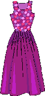
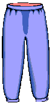

Fabricacion de Ropa
Como hacer un pantalón
Como me habéis pedido que ponga algún tutorial, voy a empezar con este. A mi me encanta hacerme pantalones, ( como ya os mostré la otra vez, con los del estilo años 40)
Os mostraré como hago yo las pantalones, de manera sencilla.
1-Para empezar una tela al gusto, (yo he elegido esta porque tenia en la cabeza hacer algo para casa tipo pijama.)
2- Poner encima de la tela doblada, una pernera de pantalón abierta, para usar como patrón de tus pantalones. Yo siempre utilizo el mismo, como patrón.
3- Ahora está cortado, he dejado bastante ancha la cintura para luego poder poner algunas pinzas a la tela.
4- Se cose lo que sería la parte de atrás
5- la de delante...
6- En la parte trasera coloco una cinta elástica que luego recubro con la tela sobrante
7-En la parte delantera he colocado unas pinzas y una cinta azul tapada con una tira de la misma tela por encima, con un agujero para fruncir y ceñirla al gusto.